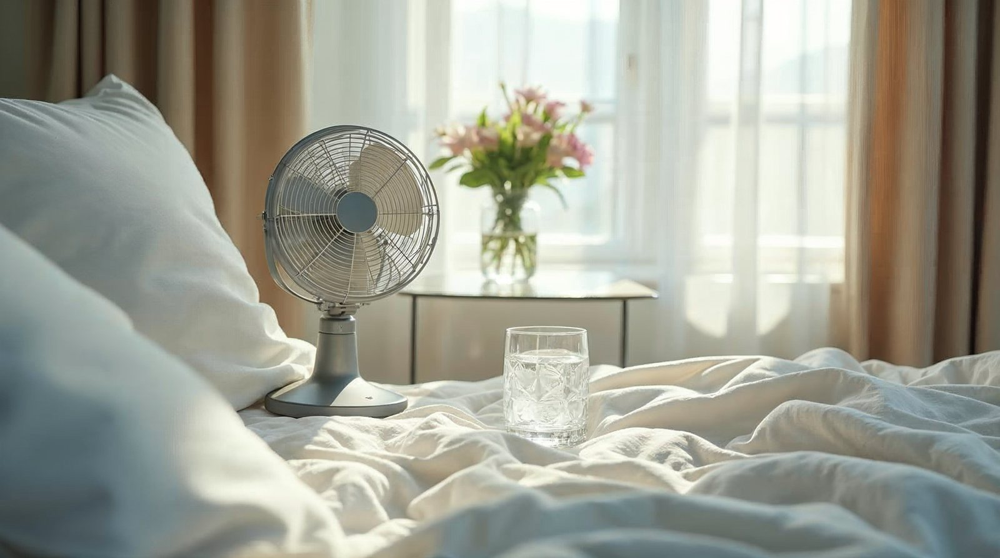
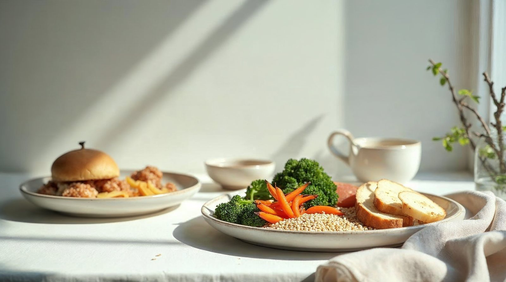
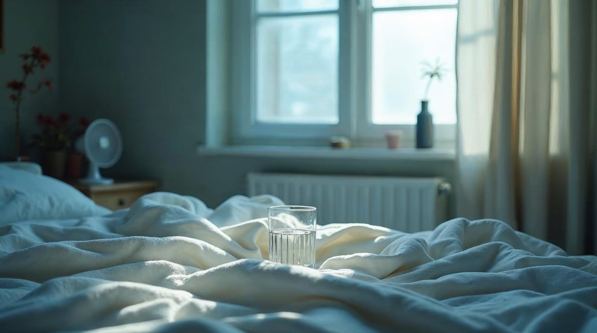
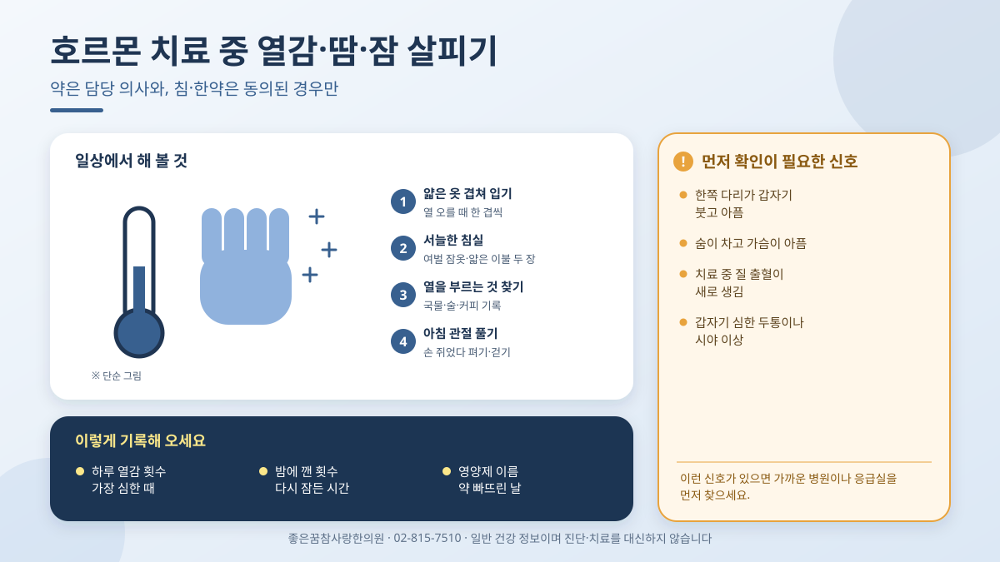

이종호 한의사 감수좋은꿈참사랑한의원 대표원장 (한의사 면허번호 19769)발행 2026-11-26 · 수정 2026-11-27
이 글의 차례
회의 도중 얼굴에서 열이 확 오르며 목덜미까지 땀이 맺혀요. 겉옷을 벗었다가 몇 분 뒤에는 다시 오싹해 걸칩니다. 밤에는 땀에 젖어 깨고, 이불을 걷었다 덮었다 하다 보면 새벽이 오죠. 아침에 일어나면 손가락 마디가 뻣뻣해 주먹이 잘 쥐어지지 않습니다.
유방암 수술 뒤 호르몬 치료제를 드시는 분, 전립선암으로 호르몬 치료를 받으시는 분께 이런 이야기를 자주 들어요. 갱년기를 이미 지났는데 다시 겪는 것 같다고 하시거나, 갱년기보다 이른 나이에 갑자기 찾아와 당황스럽다고 하시거든요. 몸이 갑자기 낯설게 느껴지시는 게 당연해요.
호르몬 치료는 몸의 호르몬 흐름을 바꾸는 치료라, 그 과정에서 이런 변화가 함께 오는 경우가 많아요. 그러니까 '증상이 생겼다'는 것과 '치료가 잘못되고 있다'는 건 다른 얘기예요. 궁금한 점은 담당 선생님께 편하게 여쭤 보시면 됩니다.
먼저 분명히 말씀드려요. 좋은꿈참사랑한의원은 암을 치료하는 곳이 아닙니다. 호르몬 치료는 암이 다시 생기거나 자라는 것을 막기 위한 중요한 치료이고, 약을 이어 갈지, 바꿀지, 증상을 어떻게 다룰지는 담당 종양 전문의가 정해요. 침이나 한약도 담당 선생님께 알리고 동의하신 경우에만 함께 상의합니다.
그 전제 위에서, 이 글은 호르몬 치료 중에 왜 이런 증상이 생기는지, 일상에서 무엇을 해 볼 수 있는지, 한의원에서는 어떤 범위에서 함께 살필 수 있는지를 정리했어요.
호르몬 치료는 어떤 치료인가요
유방암 가운데 여성호르몬의 영향을 받아 자라는 종류가 있고, 전립선암은 남성호르몬의 영향을 받는 경우가 많습니다. 호르몬 치료는 이런 호르몬의 작용을 막거나 양을 줄여 암이 자라거나 다시 생길 가능성을 낮추려는 치료입니다.
먹는 약이나 주사로 몇 년에 걸쳐 이어 가는 경우가 많습니다. 치료 기간이 길다 보니 그동안의 일상을 어떻게 편하게 지낼지가 중요한 숙제가 됩니다. 증상이 힘들다고 혼자 약을 멈추면 치료의 목적이 흔들릴 수 있어서, 불편은 담당 선생님과 먼저 나누는 것이 순서입니다.
왜 갱년기 같은 증상이 생길까요
호르몬 치료는 몸속 호르몬의 작용을 갑자기 낮추기 때문에, 자연스러운 갱년기에 몇 년에 걸쳐 오는 변화가 짧은 시간 안에 몰려올 수 있습니다. 몸이 적응할 시간이 짧아 증상이 더 또렷하게 느껴지기도 합니다.
열감과 땀은 체온을 조절하는 뇌의 기준점이 흔들려 생깁니다. 조금만 따뜻해져도 몸이 '덥다'고 판단해 혈관을 넓히고 땀을 내보내는 것입니다. 밤에 이런 일이 생기면 잠이 자꾸 끊기고, 잠이 끊기면 낮의 피로와 예민함이 커집니다.
약의 종류에 따라 관절과 근육이 뻣뻣하고 쑤시는 증상, 질 건조, 기분의 오르내림, 체중 변화, 뼈가 약해지는 변화가 함께 올 수 있습니다. 어떤 증상이 어떤 약과 관련이 깊은지는 담당 선생님이 가장 잘 아시니, 증상을 구체적으로 말씀드리는 것이 도움이 됩니다.
일반 갱년기와는 무엇이 다른가요
증상의 모양은 비슷하지만 다루는 방법이 다릅니다. 일반 갱년기에서는 호르몬 보충을 상의하기도 하지만, 호르몬 치료 중인 분께는 그 반대 방향이 되기 때문에 호르몬 성분이 든 약이나 제품은 담당 선생님과 상의 없이 쓰지 않습니다.
식물성 에스트로겐이 들었다고 알려진 건강식품이나 갱년기 영양제도 마찬가지입니다. '자연에서 온 것이라 괜찮겠지' 하고 드시기 전에, 성분표를 들고 담당 선생님께 먼저 여쭤 보시길 권합니다.
열감과 땀이 늘 호르몬 치료 때문인 것은 아닙니다. 갑상선 기능의 변화, 감염, 드시는 다른 약이 원인이 되기도 합니다. 평소와 다른 열이 이어지거나 체중이 빠르게 변하면 담당 선생님께 알려 함께 확인하는 것이 좋습니다.

요즘 내 몸은 어떤가요
- 하루에 열이 오르는 횟수와 한 번에 이어지는 시간
- 열이 오르기 전에 있었던 일: 뜨거운 음식, 술, 긴장, 따뜻한 방
- 밤에 땀 때문에 깬 횟수
- 아침에 손가락이나 무릎이 뻣뻣한 시간
- 기분이 가라앉거나 예민해지는 날
- 약을 빠뜨린 날이 있는지
관절이 뻣뻣하고 쑤실 때
호르몬 치료제 가운데 일부는 손가락, 손목, 무릎, 발바닥 같은 관절과 근육을 뻣뻣하고 쑤시게 만들 수 있습니다. 아침에 일어났을 때나 오래 앉아 있다 일어설 때 특히 심하고, 움직이다 보면 조금 풀리는 모습이 흔합니다.
이런 뻣뻣함은 가만히 있으면 오히려 굳기 쉬워서, 가벼운 움직임이 도움이 되는 경우가 많습니다. 아침에 이불 속에서 손가락을 쥐었다 펴고, 발목을 돌린 뒤 일어나 보세요. 걷기나 물속 걷기처럼 관절에 부담이 적은 운동을 꾸준히 이어 가는 것도 좋습니다.
통증이 심해 일상이 어렵다면 담당 선생님께 꼭 알려 주세요. 약을 바꾸거나 다른 방법을 함께 찾을 수 있습니다. 손목이나 손가락이 저리다면 손목터널증후군처럼 다른 이유가 겹친 것은 아닌지도 함께 살펴봅니다.

체중과 식사가 달라질 때
호르몬 치료 중에는 같은 양을 먹어도 배 쪽으로 살이 붙거나, 근육이 줄어 몸이 무겁게 느껴질 수 있습니다. 잠이 부족하면 단 음식과 야식이 당기기 쉬워 이 흐름이 더 커집니다.
끼니마다 단백질 반찬과 채소를 먼저 드시고, 밥과 빵은 그다음에 드시는 순서만 바꿔도 식후 몸이 덜 무거울 수 있습니다. 저녁은 잠들기 서너 시간 전에 마치고, 늦은 밤 간식은 줄여 보세요. 체중 숫자보다 허리둘레와 근육량의 흐름을 함께 보시길 권합니다.
일과 관계 속에서
회의 중에 갑자기 열이 오르거나, 잠을 설친 다음 날 집중이 흐려지면 일터에서 곤란할 때가 있습니다. 자리에 작은 선풍기와 물병을 두고, 겹쳐 입은 겉옷을 쉽게 벗을 수 있게 해 두면 마음이 한결 편해집니다.
가족에게도 지금의 변화를 알려 주세요. 갑자기 창문을 열고 싶어지는 이유, 밤에 자주 깨는 이유를 알고 나면 서로 오해가 줄어듭니다. 짜증이 잦아지는 것도 몸의 변화에서 오는 부분이 크다는 것을 함께 알아 두면 좋습니다.
먼저 이렇게 여쭙니다
- 어떤 암으로, 어느 선생님께 치료받고 계신가요?
- 호르몬 치료제 이름과 시작한 시기, 앞으로의 치료 기간은 어떻게 되나요?
- 열감, 땀, 잠, 관절 가운데 가장 힘든 것은 무엇인가요?
- 담당 선생님께 이 증상을 말씀드렸나요? 받은 안내가 있나요?
- 드시는 영양제나 건강식품이 있나요?
- 침이나 한약에 대해 담당 선생님께 여쭤 보셨나요?
일상에서 먼저 해 볼 수 있는 것
열감과 땀은 '언제, 무엇 뒤에' 오는지를 알면 조금씩 피해 갈 수 있습니다.
- 얇은 옷을 겹쳐 입어 열이 오를 때 한 겹씩 벗기
- 침실은 서늘하게, 땀을 잘 흡수하는 면 잠옷과 여벌 베갯잇 준비하기
- 뜨거운 국물, 매운 음식, 술, 진한 커피가 열을 부르는지 기록으로 확인하기
- 열이 오를 때 천천히 길게 숨을 내쉬기를 몇 번
- 아침에 관절이 뻣뻣하면 따뜻한 물에 손을 담그고 천천히 쥐었다 펴기
- 하루 20~30분 걷기와 가벼운 근력 운동으로 뼈와 근육 지키기
잠은 땀에 젖어 깨더라도 다시 잠들기 쉬운 환경을 만드는 것이 중요합니다. 머리맡에 시원한 물과 여벌 잠옷을 두고, 깼을 때 휴대폰을 보지 않는 것만으로도 다시 잠드는 시간이 짧아질 수 있습니다.
호르몬 치료 중에는 뼈가 약해질 수 있어서 담당 선생님이 골밀도 검사를 권하는 경우가 있습니다. 식사에서 단백질과 칼슘을 챙기고, 낮에 햇볕을 쬐며 걷는 것이 뼈에도 기분에도 도움이 됩니다.
마음의 무게도 함께 살펴 주세요. 열감과 불면이 길어지면 짜증과 우울감이 커지기 쉽습니다. 같은 치료를 받는 사람들의 모임이나 병원의 상담 프로그램을 이용하는 것도 좋은 방법입니다.

잠을 지키는 저녁 습관
열감 때문에 깨는 밤이 이어지면 잠자리에 들기 전부터 '오늘도 깨겠지' 하는 긴장이 생깁니다. 이 긴장이 다시 잠을 얕게 만듭니다. 그래서 잠자리 환경과 함께 저녁의 흐름을 부드럽게 만드는 것이 도움이 됩니다.
저녁에는 술과 늦은 커피를 줄이고, 잠들기 한두 시간 전 미지근한 물로 샤워하면 체온이 자연스럽게 내려가며 잠들기 쉬워집니다. 너무 뜨거운 물은 오히려 열감을 부를 수 있습니다. 침실 온도를 조금 낮추고 이불은 얇은 것 두 장으로 나눠 덮으면 깼을 때 조절하기 편합니다.
깨어서 20분 넘게 잠이 오지 않으면 잠시 거실로 나와 조명을 낮추고 조용히 앉아 있다가 졸릴 때 다시 들어가세요. 낮잠은 짧게, 이른 오후에만 자는 것이 밤잠을 지키는 데 좋습니다.
한의원에서 함께 살필 수 있는 경우
- 담당 선생님이 동의하신 범위에서 열감과 땀, 잠 문제를 함께 살피고 싶은 경우
- 밤에 자주 깨 낮에 기운이 떨어지고 예민해진 경우
- 손가락, 무릎, 허리 같은 관절과 근육이 뻣뻣하고 쑤시는 경우
- 소화가 더디고 체중이 늘거나 몸이 무거운 경우
- 목과 어깨가 굳고 긴장이 풀리지 않는 경우
좋은꿈참사랑한의원에 오시면 모든 분의 맥을 먼저 짚고, 열이 오르는 모양과 잠, 관절의 뻣뻣함을 살핍니다. 담당 선생님의 동의를 확인한 뒤, 진찰한 내용을 바탕으로 침, 생활 조정, 한약 상담 가운데 지금 상태에 맞는 것을 정합니다.
한약은 호르몬 치료제와의 관계를 특히 신중하게 보며, 담당 선생님과 상의된 경우에만, 드시는 약을 모두 확인한 뒤 정합니다. 호르몬 치료제는 담당 선생님과 상의 없이 멈추지 않습니다. 한의원은 암 치료를 대신하거나 줄이자고 권하지 않고, 치료를 이어 가는 동안의 일상을 함께 살피는 자리입니다.
담당 선생님께 이렇게 말씀해 보세요
열감과 잠 문제는 진료실에서 "좀 힘들어요" 한마디로 지나가기 쉽습니다. 하지만 담당 선생님이 약을 조정하거나 다른 방법을 권하시려면 그 정도를 구체적으로 아는 것이 도움이 됩니다.
"하루에 열 번쯤 열이 오르고, 밤에 세 번 깨요", "아침에 손가락이 30분 넘게 뻣뻣해요"처럼 횟수와 시간으로 말씀해 보세요. 드시는 영양제와 건강식품, 한의원 진료를 받아 보고 싶다는 마음도 함께 말씀하시면 담당 선생님이 전체 그림을 보고 판단하시기 쉽습니다.
질문은 미리 종이에 적어 가시길 권합니다. 가장 궁금한 것 세 가지를 맨 위에 적어 두면 순서를 놓치지 않습니다. 가족과 함께 가시면 듣고 기억하기가 한결 수월합니다. 짧은 진료 시간에 하고 싶은 말을 놓치지 않고, 들은 답을 그 자리에서 메모해 두면 집에 와서 다시 확인하기도 쉽습니다.
이렇게 기록해 오시면 상담이 쉬워집니다
이 기록은 담당 선생님께도 그대로 보여 드리면 좋습니다.
- 하루 열감 횟수와 가장 심했던 때
- 밤에 깬 횟수와 다시 잠들기까지 걸린 시간
- 열을 부른 것 같은 음식, 술, 상황
- 아침 관절 뻣뻣함이 풀리기까지 걸린 시간
- 약을 드신 시각과 빠뜨린 날
- 드시는 영양제·건강식품 이름
2주만 적어도 열이 오르는 시간대와 계기가 보이기 시작합니다. 그 흐름을 보면 옷차림, 식사, 잠자리에서 무엇부터 바꿀지 정하기 쉬워집니다.
치료를 이어 가는 동안
호르몬 치료는 긴 길이에요. 그 길 위에서 열이 오르고 잠이 끊기는 날은 이 치료를 받는 많은 분이 함께 겪는 일이고, 혼자 견디실 일만은 아니에요. 힘든 점은 담당 선생님께 먼저 말씀하시고, 일상의 리듬을 지키는 일은 곁에서 함께 살펴 가겠습니다.
열감과 잠의 흔들림은 치료가 이어지는 동안 오르내림을 보이는 경우가 많아요. 몇 주 편하다가 계절이 바뀌거나 일이 몰리면 다시 심해지기도 하거든요. 그럴 때 기록을 펼쳐 보면 무엇이 흐름을 바꿨는지 짐작이 가고, 다음에 같은 시기가 오면 미리 준비할 수 있어요.
힘든 날에는 스스로에게 너그러워져도 괜찮아요. 잠을 설친 다음 날은 일정을 조금 줄이고, 낮에 짧게 쉬어 가는 것도 치료를 이어 가는 방법이에요.
몸 전체의 흐름을 살피는 건 제가 챙길게요. 이번 주에 부탁드리는 건 하나, 얇은 옷을 겹쳐 입는 거예요. 열이 오르면 한 겹 벗고, 오싹하면 다시 걸치기 쉽게요. 딴 건 하시던 대로 편하게 하셔도 돼요. 작은 조정이 모여 하루의 편안함이 조금씩 넓어지거든요. 열이 오른 횟수와 밤잠을 적어 오시면 그 이야기부터 같이 나눠요.
이런 증상은 먼저 확인이 필요합니다
- 한쪽 다리가 갑자기 붓고 아플 때, 숨이 차거나 가슴이 아플 때
- 갑자기 심한 두통·말 어눌함·한쪽 힘 빠짐·시야 이상이 생길 때, 질 출혈이 새로 생길 때
이런 신호가 있으면 한의원보다 가까운 병원이나 응급실을 먼저 찾으세요.
함께 읽으면 좋은 글
- 항암 치료 중이거나 마친 뒤 일상의 기운·입맛·잠을 한의원과 상의하고 싶을 때는 어떻게 하나요?
- 갱년기에 몸이 달라질 때 한의원에서는 무엇을 먼저 묻나요?
- 갱년기에 밤마다 땀에 젖어 깨는 날이 많을 때는 어떻게 하나요?
- 자고 일어나면 베개와 잠옷이 젖어 있는 밤 식은땀(도한)은 어떻게 살피나요?
- 새벽에 자꾸 잠이 깨는 이유는 무엇이고, 어떤 점을 살펴보나요?

여쭙는 것
- 어떤 암으로, 어느 선생님께 치료받고 계신가요?
- 호르몬 치료제 이름과 시작한 시기, 앞으로의 치료 기간은 어떻게 되나요?
- 열감, 땀, 잠, 관절 가운데 가장 힘든 것은 무엇인가요?
생활에서 해 볼 것
- 얇은 옷을 겹쳐 입어 열이 오를 때 한 겹씩 벗기
- 침실은 서늘하게, 땀을 잘 흡수하는 면 잠옷과 여벌 베갯잇 준비하기
- 뜨거운 국물, 매운 음식, 술, 진한 커피가 열을 부르는지 기록으로 확인하기
한의원에서 함께 살필 것
- 담당 선생님이 동의하신 범위에서 열감과 땀, 잠 문제를 함께 살피고 싶은 경우
- 밤에 자주 깨 낮에 기운이 떨어지고 예민해진 경우
- 손가락, 무릎, 허리 같은 관절과 근육이 뻣뻣하고 쑤시는 경우
먼저 확인이 필요한 신호
- 한쪽 다리가 갑자기 붓고 아플 때, 숨이 차거나 가슴이 아플 때
- 갑자기 심한 두통·말 어눌함·한쪽 힘 빠짐·시야 이상이 생길 때, 질 출혈이 새로…
한눈에 보는 표
| 구분 | 핵심 |
|---|---|
| 여쭙는 것 | 어떤 암으로, 어느 선생님께 치료받고 계신가요? 호르몬 치료제 이름과 시작한 시기, 앞으로의 치료 기간은 어떻게 되나요? |
| 생활에서 해 볼 것 | 얇은 옷을 겹쳐 입어 열이 오를 때 한 겹씩 벗기 침실은 서늘하게, 땀을 잘 흡수하는 면 잠옷과 여벌 베갯잇 준비하기 |
| 한의원에서 함께 살필 것 | 담당 선생님이 동의하신 범위에서 열감과 땀, 잠 문제를 함께 살피고 싶은 경우 밤에 자주 깨 낮에 기운이 떨어지고 예민해진 경우 |
| 먼저 확인이 필요한 신호 | 한쪽 다리가 갑자기 붓고 아플 때, 숨이 차거나 가슴이 아플 때 갑자기 심한 두통·말 어눌함·한쪽 힘 빠짐·시야 이상이 생길 때, 질 출혈이 새로 생길 때 |
자주 묻는 질문
열감이 너무 힘든데 호르몬 치료제를 잠시 끊어도 되나요?
혼자 멈추시면 치료의 목적이 흔들릴 수 있습니다. 증상이 힘드시면 담당 선생님께 먼저 말씀하세요. 약을 조정하거나 증상을 다루는 방법을 함께 정해 주실 수 있습니다.
갱년기 영양제나 건강식품을 먹어도 되나요?
호르몬과 비슷한 작용을 한다고 알려진 성분이 들어 있을 수 있어서, 드시기 전에 성분표를 들고 담당 선생님께 먼저 여쭤 보시길 권합니다.
호르몬 치료 중에 한약을 먹거나 침을 맞아도 되나요?
둘 다 담당 선생님께 먼저 여쭤 보시고 동의를 확인한 뒤에 정합니다. 한약은 드시는 약을 모두 확인하고 신중하게 정합니다. 침은 수술 부위나 방사선을 받은 피부를 피하고, 림프절 수술을 받은 쪽 팔은 진찰을 거쳐 조심스럽게 정합니다.
남성도 이런 증상이 생기나요?
네, 전립선암으로 호르몬 치료를 받는 남성도 열감, 땀, 기운 저하, 체중 변화 같은 증상을 겪을 수 있습니다. 담당 선생님께 먼저 말씀하시고, 일상의 관리는 함께 살펴볼 수 있습니다.
좋은꿈참사랑한의원은 재진 때 지난번 이야기부터 이어서 여쭙니다. 진료시간과 예약은 오시는 길에서 확인하세요.
어디서 상담받을 수 있나요?
좋은꿈참사랑한의원은 서울 동작구 만양로2길 2 신성빌딩 3층·5층(서울 동작구 상도동, 7호선 상도역 3번 출구 근처)에 있습니다. 한의사 3명(이종호 대표원장, 조영기 수석진료원장, 정원영 진료원장)이 진료합니다. 진료시간은 평일 09:30~20:00(점심 13:00~14:00), 토·일·공휴일 09:30~15:00이며, 방문 전 전화로 확인을 권합니다. 예약은 네이버 예약, 카카오톡 상담, 전화 02-815-7510로 받습니다.
이 글은 일반적인 건강 정보이며 개인의 진단이나 치료를 대신하지 않습니다. 증상이 있거나 복용 중인 약이 있다면 진료를 통해 확인하세요. 치료 효과는 개인마다 다를 수 있습니다.
작성 기준: 일반적으로 알려져 있는 건강 정보를 참고해 정리했습니다(대표원장 감수). 증상 기록은 1~2주 동안 하루 1회, 비슷한 시간에 적어 오시면 지난 상태와 비교하기 쉽습니다.